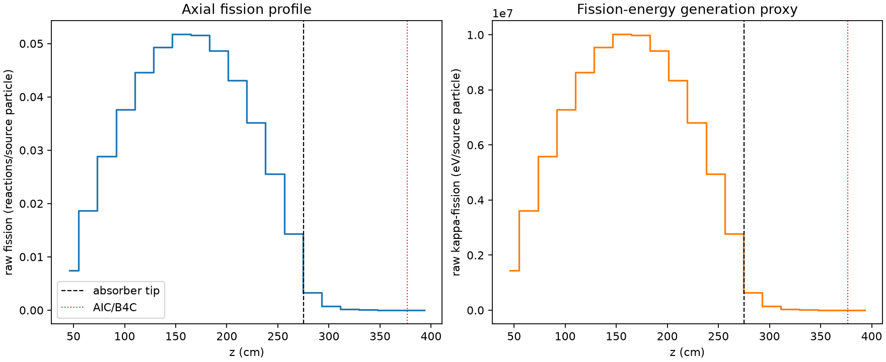
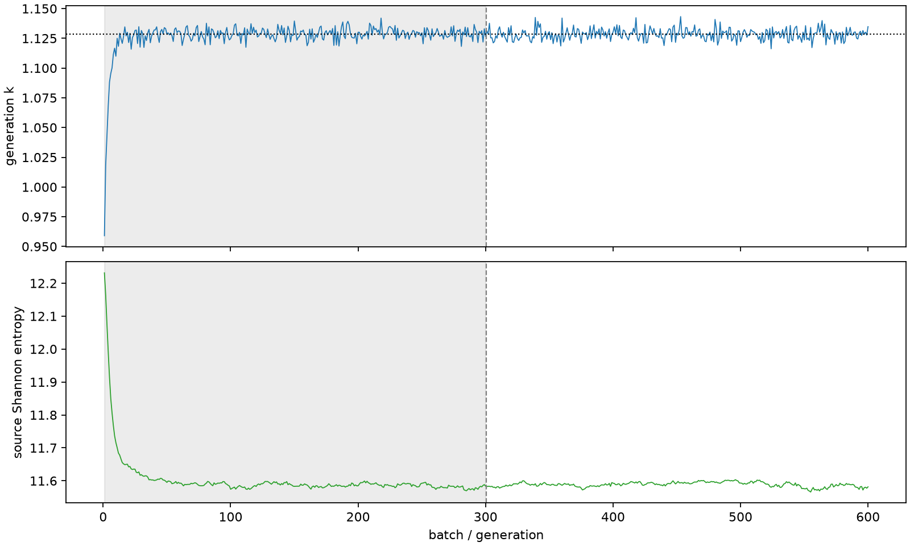

| field | value |
|---|---|
| experiment | V2-STAGE_256_OGRENCI_02-0018 |
| k | 1.1285082850774957 |
| MC standard error | 0.00017941867576116234 |
| seconds | 1000.9991413309981 |
| acceptance | not_assessed |
| convergence | review_required |
Completed is output integrity only; physical and statistical review required. Zero tallies do not prove zero production or zero uncertainty.
| diagnostic | value |
|---|---|
| geometric fuel voxels | 5280 |
| zero fission tally voxels | 62 |
| low signal fuel voxels | 1013 |
| low signal fission share | 0.00010074466902416511 |
| low signal kappa share | 0.00010078181633501368 |
| important fission share | 0.9500486747262268 |
| previous filter included | 4267 |
| duration estimate s | 1562.5173488400023 |
| actual minus estimate s | -561.5182075090042 |
| fission relative MC error | statistics |
|---|---|
| all_geometric_fuel | {"voxels": 5280, "positive_mean_voxels": 5218, "zero_mean_voxels": 62, "undefined_relative_error_voxels": 62, "median": 0.010440382095017046, "p95": 0.7437393282515559, "maximum": 1.0000000000000002} |
| low_signal | {"voxels": 1013, "positive_mean_voxels": 951, "zero_mean_voxels": 62, "undefined_relative_error_voxels": 62, "median": 0.5103420959056038, "p95": 1.0, "maximum": 1.0000000000000002} |
| important_95pct | {"voxels": 2956, "positive_mean_voxels": 2956, "zero_mean_voxels": 0, "undefined_relative_error_voxels": 0, "median": 0.007701531846017923, "p95": 0.01160961121117648, "maximum": 0.014582902367434454} |
| outside_previous_filter | {"voxels": 1013, "positive_mean_voxels": 951, "zero_mean_voxels": 62, "undefined_relative_error_voxels": 62, "median": 0.5103420959056038, "p95": 1.0, "maximum": 1.0000000000000002} |
| kappa_fission relative MC error | statistics |
|---|---|
| all_geometric_fuel | {"voxels": 5280, "positive_mean_voxels": 5218, "zero_mean_voxels": 62, "undefined_relative_error_voxels": 62, "median": 0.010428395015448007, "p95": 0.7443385889999226, "maximum": 1.0000000000000002} |
| low_signal | {"voxels": 1013, "positive_mean_voxels": 951, "zero_mean_voxels": 62, "undefined_relative_error_voxels": 62, "median": 0.5095321112028248, "p95": 1.0, "maximum": 1.0000000000000002} |
| important_95pct | {"voxels": 2956, "positive_mean_voxels": 2956, "zero_mean_voxels": 0, "undefined_relative_error_voxels": 0, "median": 0.0076921025747471485, "p95": 0.011596136586481681, "maximum": 0.014566196989298967} |
| outside_previous_filter | {"voxels": 1013, "positive_mean_voxels": 951, "zero_mean_voxels": 62, "undefined_relative_error_voxels": 62, "median": 0.5095321112028248, "p95": 1.0, "maximum": 1.0000000000000002} |
| axial bin | fission share | kappa-fission share |
|---|---|---|
| 1 | 0.016114706872593098 | 0.0161154887121606 |
| 2 | 0.040442498040274076 | 0.040442280271465784 |
| 3 | 0.06263127014346725 | 0.06263098376902229 |
| 4 | 0.08164919796092307 | 0.08164850534857705 |
| 5 | 0.09688149221754803 | 0.09688106395469313 |
| 6 | 0.10696089976553383 | 0.10696047048381742 |
| 7 | 0.11229141585027143 | 0.11229084833500971 |
| 8 | 0.11192766944670403 | 0.11192723518372179 |
| 9 | 0.10559065974383602 | 0.10558987288654634 |
| 10 | 0.09354364230618088 | 0.09354336195598777 |
| 11 | 0.07628925690699798 | 0.07628912690247792 |
| 12 | 0.05550389300104248 | 0.05550373963869935 |
| 13 | 0.031023577652916058 | 0.03102372468688379 |
| 14 | 0.007124122228004101 | 0.0071266848734126515 |
| 15 | 0.0015528357383739315 | 0.0015535267247611378 |
| 16 | 0.00035991190847277225 | 0.00036009018381919606 |
| 17 | 8.477334159860957e-05 | 8.481180909010627e-05 |
| 18 | 2.2143372225699785e-05 | 2.214951839612297e-05 |
| 19 | 4.999616328702679e-06 | 4.999699928339346e-06 |
| 20 | 1.0338867079113366e-06 | 1.0350615296405455e-06 |
Histories include the inactive-to-active transition at batch 300. kappa-fission approximates fission energy production, not total heat deposition.

